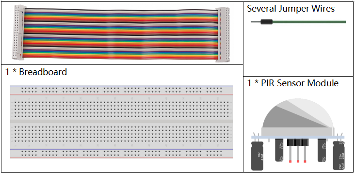
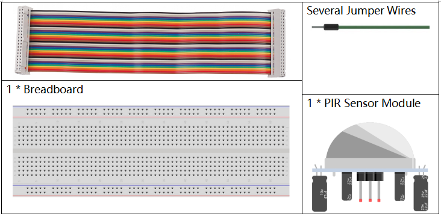

Nota
¡Hola! Bienvenido a la comunidad de entusiastas de SunFounder para Raspberry Pi, Arduino y ESP32 en Facebook. Únete a otros apasionados y profundiza en el uso de Raspberry Pi, Arduino y ESP32.
¿Por qué unirte?
Soporte de expertos: Resuelve problemas postventa y desafíos técnicos con la ayuda de nuestra comunidad y equipo.
Aprende y comparte: Intercambia consejos y tutoriales para mejorar tus habilidades.
Avances exclusivos: Obtén acceso anticipado a anuncios de nuevos productos y adelantos exclusivos.
Descuentos especiales: Disfruta de descuentos exclusivos en nuestros productos más recientes.
Promociones festivas y sorteos: Participa en sorteos y promociones de temporada.
üëâ ¬øListo para explorar y crear con nosotros? Haz clic en [Aqu√≠] y únete hoy mismo.
3.1.1 Dispositivo Contador
Introducción
Aquí crearemos un sistema contador que muestra números, compuesto por un sensor PIR y una pantalla de 4 dígitos de segmento. Cuando el sensor PIR detecta que alguien pasa, el número en la pantalla de 4 dígitos aumentará en 1. Puedes utilizar este contador para contar el número de personas que atraviesan un pasillo.
Componentes necesarios
En este proyecto, necesitamos los siguientes componentes.
 

Diagrama esquemático
T-Board Name |
physical |
wiringPi |
BCM |
GPIO17 |
Pin 11 |
0 |
17 |
GPIO27 |
Pin 13 |
2 |
27 |
GPIO22 |
Pin 15 |
3 |
22 |
SPIMOSI |
Pin 19 |
12 |
10 |
GPIO18 |
Pin 12 |
1 |
18 |
GPIO23 |
Pin 16 |
4 |
23 |
GPIO24 |
Pin 18 |
5 |
24 |
GPIO26 |
Pin 37 |
25 |
26 |

Procedimientos experimentales
Paso 1: Construye el circuito.

Paso 2: Ve a la carpeta del código.
cd ~/davinci-kit-for-raspberry-pi/python-pi5
Paso 3: Ejecuta el archivo ejecutable.
sudo python3 3.1.1_CountingDevice.py
Después de ejecutar el código, cuando el sensor PIR detecte que alguien pasa, el número en la pantalla de 4 dígitos aumentará en 1.
El módulo PIR tiene dos potenciómetros: uno para ajustar la sensibilidad y otro para ajustar la distancia de detección. Para mejorar el funcionamiento del módulo PIR, gíralos ambos en sentido contrario a las agujas del reloj hasta el final.

Advertencia
Si aparece el mensaje de error RuntimeError: Cannot determine SOC peripheral base address, consulta Si gpiozero no funciona.
Código
Nota
Puedes Modificar/Restablecer/Copiar/Ejecutar/Detener el código a continuación. Pero antes, debes ir a la ruta del código fuente como raphael-kit/python-pi5. Después de modificar el código, puedes ejecutarlo directamente para ver el efecto.
#!/usr/bin/env python3
from gpiozero import OutputDevice, MotionSensor
# Inicializar el sensor de movimiento PIR en GPIO 26
pir = MotionSensor(26)
# Inicializar pines del registro de desplazamiento
SDI = OutputDevice(24) # Entrada de Datos Seriales
RCLK = OutputDevice(23) # Entrada del Reloj de Registro
SRCLK = OutputDevice(18) # Entrada del Reloj de Registro de Desplazamiento
# Inicializar pines de la pantalla de 7 segmentos
placePin = [OutputDevice(pin) for pin in (10, 22, 27, 17)]
# Definir códigos de dígitos para la pantalla de 7 segmentos
number = (0xc0, 0xf9, 0xa4, 0xb0, 0x99, 0x92, 0x82, 0xf8, 0x80, 0x90)
# Contador para el número mostrado
counter = 0
def clearDisplay():
# Limpia la pantalla apagando todos los segmentos
for _ in range(8):
SDI.on()
SRCLK.on()
SRCLK.off()
RCLK.on()
RCLK.off()
def hc595_shift(data):
# Desplaza datos en el registro de desplazamiento 74HC595
for i in range(8):
SDI.value = 0x80 & (data << i)
SRCLK.on()
SRCLK.off()
RCLK.on()
RCLK.off()
def pickDigit(digit):
# Activa un dígito específico de la pantalla de 7 segmentos
for pin in placePin:
pin.off()
placePin[digit].on()
def display():
# Actualiza la pantalla con el valor actual del contador
global counter
clearDisplay()
pickDigit(0)
hc595_shift(number[counter % 10])
clearDisplay()
pickDigit(1)
hc595_shift(number[counter % 100 // 10])
clearDisplay()
pickDigit(2)
hc595_shift(number[counter % 1000 // 100])
clearDisplay()
pickDigit(3)
hc595_shift(number[counter % 10000 // 1000])
def loop():
# Bucle principal para actualizar la pantalla y comprobar movimiento
global counter
currentState = 0
lastState = 0
while True:
display()
currentState = 1 if pir.motion_detected else 0
if currentState == 1 and lastState == 0:
counter += 1
lastState = currentState
try:
loop()
except KeyboardInterrupt:
# Apagar todos los pines cuando se interrumpe el script
SDI.off()
SRCLK.off()
RCLK.off()
pass
Explicación del Código
Esta línea importa las clases
OutputDeviceyMotionSensorde la bibliotecagpiozero.OutputDevicepuede ser un LED, motor, o cualquier dispositivo que se desee controlar como salida.MotionSensores típicamente un sensor PIR (Infrarrojo Pasivo) usado para detectar movimiento.#!/usr/bin/env python3 from gpiozero import OutputDevice, MotionSensor
Inicializa el sensor de movimiento PIR conectado al pin GPIO 26.
# Inicializar el sensor de movimiento PIR en GPIO 26 pir = MotionSensor(26)
Inicializa los pines GPIO conectados a la Entrada de Datos Seriales (SDI), la Entrada del Reloj de Registro (RCLK) y la Entrada del Reloj del Registro de Desplazamiento (SRCLK) del registro de desplazamiento.
# Inicializar pines del registro de desplazamiento SDI = OutputDevice(24) # Entrada de Datos Seriales RCLK = OutputDevice(23) # Entrada del Reloj de Registro SRCLK = OutputDevice(18) # Entrada del Reloj del Registro de Desplazamiento
Inicializa los pines para cada dígito de la pantalla de 7 segmentos y define los códigos binarios para mostrar los números del 0 al 9.
# Inicializar pines de la pantalla de 7 segmentos placePin = [OutputDevice(pin) for pin in (10, 22, 27, 17)] # Definir códigos de dígitos para la pantalla de 7 segmentos number = (0xc0, 0xf9, 0xa4, 0xb0, 0x99, 0x92, 0x82, 0xf8, 0x80, 0x90)
Limpia la pantalla de 7 segmentos apagando todos los segmentos antes de mostrar el siguiente dígito.
def clearDisplay(): # Limpia la pantalla apagando todos los segmentos for _ in range(8): SDI.on() SRCLK.on() SRCLK.off() RCLK.on() RCLK.off()
Desplaza un byte de datos al registro de desplazamiento 74HC595, controlando los segmentos de la pantalla.
def hc595_shift(data): # Desplaza datos en el registro de desplazamiento 74HC595 for i in range(8): SDI.value = 0x80 & (data << i) SRCLK.on() SRCLK.off() RCLK.on() RCLK.off()
Selecciona qué dígito de la pantalla de 7 segmentos activar. Cada dígito es controlado por un pin GPIO separado.
def pickDigit(digit): # Activa un dígito específico de la pantalla de 7 segmentos for pin in placePin: pin.off() placePin[digit].on()
Inicia la visualización para el dígito de unidades primero, seguido de la activación para el dígito de las decenas. Posteriormente, activa las pantallas para los dígitos de centenas y millares en orden. Esta rápida sucesión de activaciones crea la ilusión de una pantalla continua de cuatro dígitos.
def display(): # Actualiza la pantalla con el valor actual del contador global counter clearDisplay() pickDigit(0) hc595_shift(number[counter % 10]) clearDisplay() pickDigit(1) hc595_shift(number[counter % 100 // 10]) clearDisplay() pickDigit(2) hc595_shift(number[counter % 1000 // 100]) clearDisplay() pickDigit(3) hc595_shift(number[counter % 10000 // 1000])
Define el bucle principal donde la pantalla se actualiza continuamente y se verifica el estado del sensor PIR. Si se detecta movimiento, el contador se incrementa.
def loop(): # Bucle principal para actualizar la pantalla y comprobar movimiento global counter currentState = 0 lastState = 0 while True: display() currentState = 1 if pir.motion_detected else 0 if currentState == 1 and lastState == 0: counter += 1 lastState = currentState
Ejecuta el bucle principal y asegura que el script pueda ser interrumpido con un comando de teclado (Ctrl+C), apagando todos los pines para una salida limpia.
try: loop() except KeyboardInterrupt: # Apaga todos los pines cuando el script es interrumpido SDI.off() SRCLK.off() RCLK.off() pass